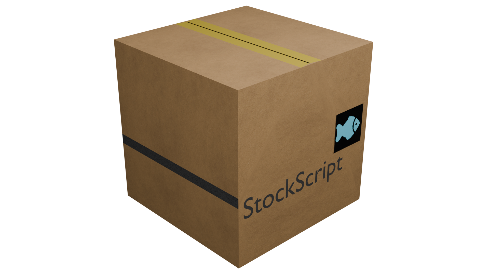

Bienvenido a StockScript
StockScript es un lenguaje orientado a inventarios. Sus programas terminan cada instrucción con
:, usan niveles [a] a [z] para el anidamiento y el pez
🐟 para separar las partes de un ciclo auto.

1. Tipos de dato y literales
| Palabra | Tipo | Ejemplo |
|---|---|---|
lote | entero | lote cajas = 10: |
prom | flotante | prom precio = 15.5: |
palanca | booleano | palanca activo = right: |
etiqueta | cadena | etiqueta nombre = "Atun": |
mini | carácter | mini letra = 'A': |
Booleanos: right / true y left / false.
2. Declarar, asignar, incrementar e imprimir
lote cajas = 10:
cajas = cajas + 5:
cajas++:
etiquetadora("Total: "):
etiquetadora(cajas):Toda declaración debe llevar valor inicial; si no, el analizador semántico lo marca.
3. Condicionales: ibox, eibox / iebox, ebox
ibox [a](stock > 50)[1]{
etiquetadora("Stock alto"):
} eibox [a](stock == 25)[1]{
etiquetadora("Stock exacto"):
} iebox [a](stock < 10)[1]{
etiquetadora("Stock critico"):
} ebox [a][1]{
etiquetadora("Rango normal"):
}El [1] ejecuta el bloque; el [0] lo omite, como un comentario.
4. Ciclos auto con 🐟
lote i = 1:
auto [a][i++ 🐟 i <= 3 🐟][1]{
etiquetadora(i):
auto [b][j++ 🐟 j <= 2 🐟][1]{
etiquetadora("interno"):
}
}Tres partes separadas por 🐟: inicialización, condición y paso. El nivel empieza en [a].
5. Errores que detecta la web
- Léxicos: caracteres desconocidos, cadenas sin cerrar.
- Sintácticos: falta de
:, paréntesis o llave mal cerrada. - Semánticos: variable no declarada, nivel
[b]en la raíz, interruptor inválido. - Ejecución: división entre cero.
6. Cómo guardar tus programas
En el editor, pulsa Guardar y escribe un nombre como miinventario.stoc.
El archivo se conserva en PáginaWeb/storage/stoc/ y aparece en el selector Abrir.
Ln 1, Col 1